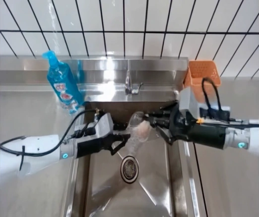

Forecast the change.
Predict the next state
from actions and history.
Motion-Guided Flow Correction for Long-Horizon Robot Video Prediction
Minute-scale rollouts that stay with the action and keep the world in context.

All background videos are long-horizon predictions by EtherWM.
01 / Overview
Predict the next state
from actions and history.
Guide each denoising step
with motion forecasts.
Keep recent details
and long-term memory.
02 / Method
History + actions
Each denoising step
Generate the next chunk
03 / Long Horizon
110 seconds of continuous, action-conditioned prediction.
04 / More Results
DROID benchmark comparisons, followed by additional everyday-scene rollouts.
05 / Generalization
Trajectory accuracy · 8,654 episodes
Qwen2.5-VL · 500 DROID episodes · scores / 10
06 / Ablations
07 / Simulation Datasets
Additional evaluation on the RoboTwin 2.0 simulation benchmark: 50 tasks, 500 episodes. Best on 5 of 7 metrics.
08 / Citation
@misc{etherwm2027,
title = {EtherWM: Motion-Guided Flow Correction
for Long-Horizon Robot Video Prediction},
author = {Anonymous Authors},
year = {2027},
note = {Anonymous manuscript}
}